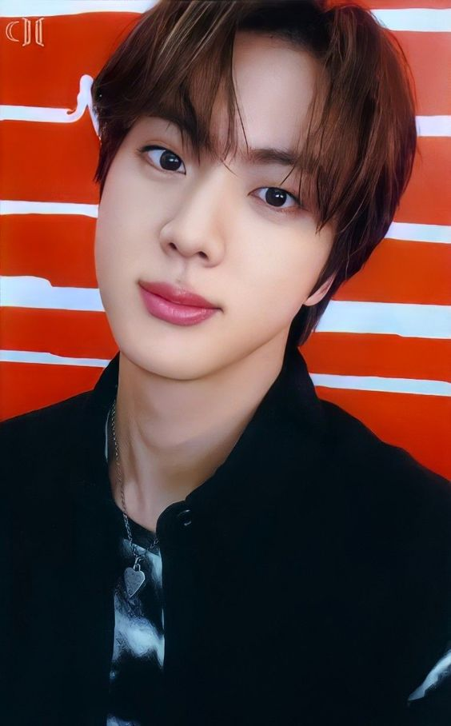
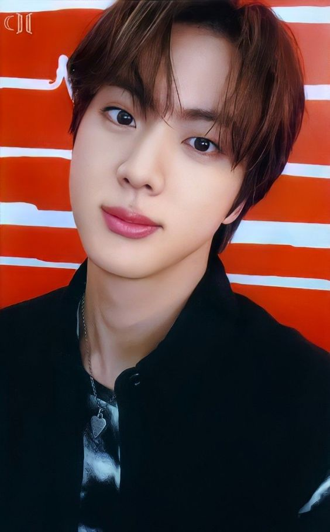

- TAMBIÉN TE INVITAMOS A VER MÁS SOBRE: (HAZ CLICK EN CUALQUIERA DE LAS IMÁGENES QUE SE ENCUENTRAN ABAJO)
Volver a la página principal "BTS 방탄소년단 aquí"
 RM |  JIN |  SUGA |  J-HOPE |  JIMIN |  TAE HYUNG |
Jeon Jung-kook
전정국
24 años
1ro de septiembre
1997
Virgo
A
Jeon Jung-kook es conocido únicamente como Jungkook. Cantante y letrista, es el miembro más joven de BTS conocido en corea como el maknae. No cuenta con producciones oficiales como solista, pero su primer solo, Euphoria, es uno de los temas más famosos y populares de la banda. Su segunda canción solista, titulada My Time también se mantuvo mucho tiempo en el Billboard Hot 100. Está registrado como el productor de dos canciones de BTS: Love is Not Over y Magic Shop. Nació en Busan, Corea del Sur. Tiene un hermano mayor. Cuando era pequeño, soñaba con ser un jugador de bádminton, pero eso cambió cuando vio a G-Dragon presentándose en vivo con Heartbreaker en la televisión, lo cual lo llevó a soñar con ser cantante. Durante el 2011 audicionó para el programa de talentos Superstar K. No fue seleccionado, pero recibió ofertas de reclutamiento de otras siete empresas, entre ellas Big Hit Entertainment. Cuando vio a su compañero, RM, presentarse en vivo una vez, se decantó por entrar a Big Hit. Para mejorar sus habilidades de baile antes de debutar, durante el verano del 2012 decidió viajar a Los Ángeles para practicar con Movement Lifestyle. Es uno de los célebres graduados de la reconocida Escuela de artes escénicas de Seúl. Actualmente se encuentra estudiando en una universidad virtual.
Era jugador de balonmano antes de unirse al grupo.
Su hobby es dibujar.
Su comida favorita es cualquier cosa que tenga harina, entre ellas la pizza y el pan.
Le gusta el número 1Su color favorito es el negro.
Dice cocinar muy bien.Le gustan los zapatos y el maquillaje.
Su modelo a seguir es G-Dragon de BIGBANG.
Para BT21 de la línea (FRIENDS), el personaje que creó se llama Cooky y es un conejo rosa.
Volver a la página principal "BTS 방탄소년단 aquí"
| RM |  JIN | SUGA | J-HOPE | JIMIN | TAE HYUNG |